THE LIKING GAP
After a conversation with a stranger, people consistently underestimate how much the other person liked them.
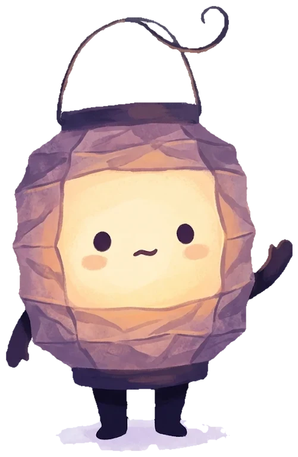
Wick has been waiting for someone to say hi.
pull the chain or press any key
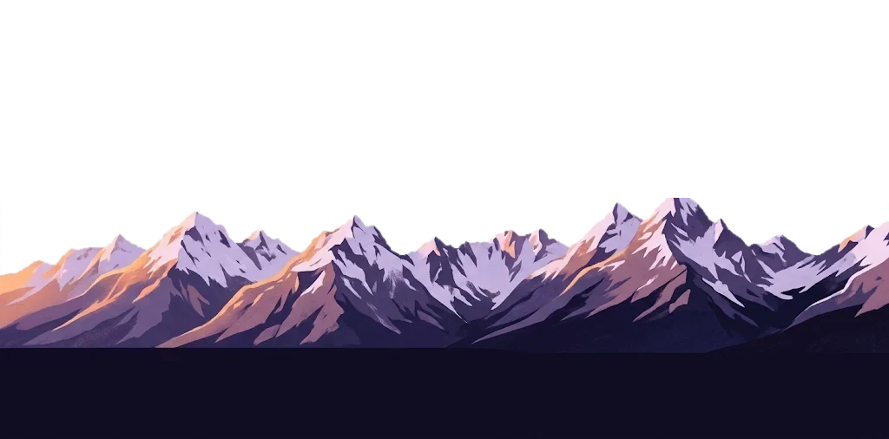
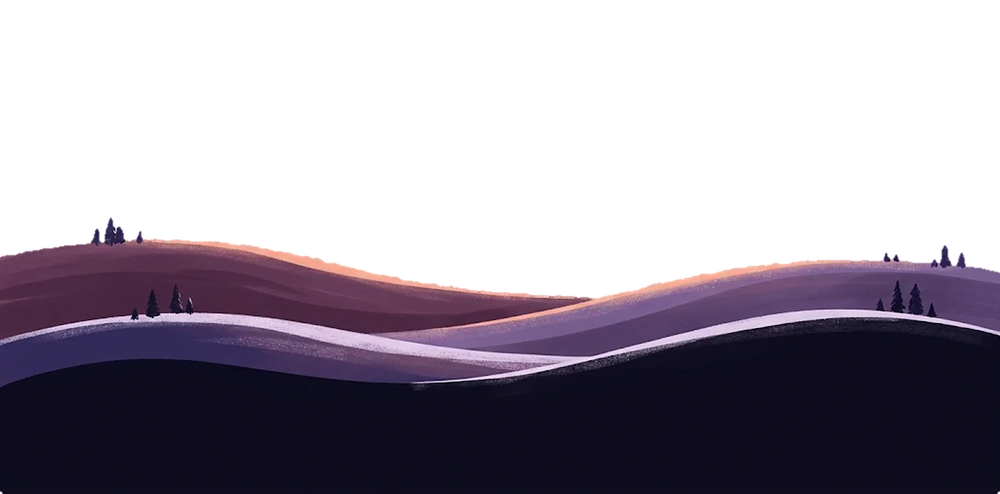
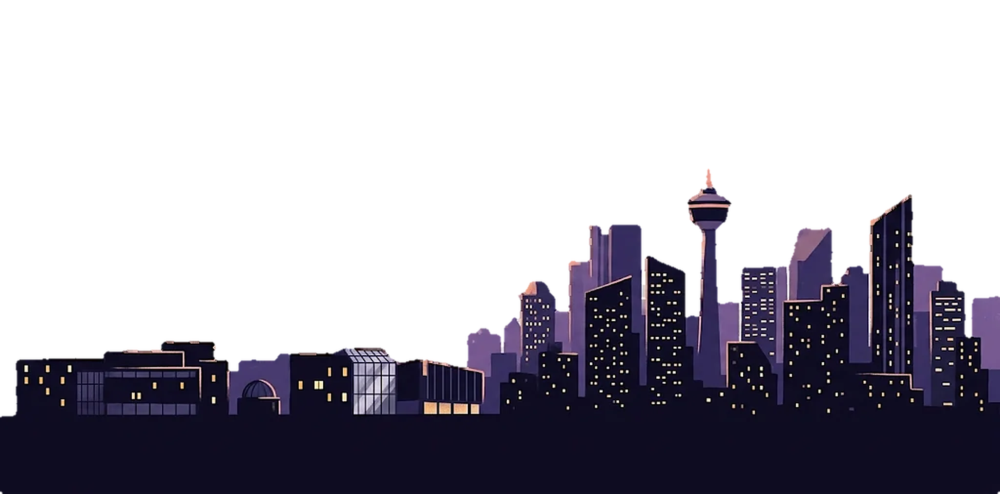
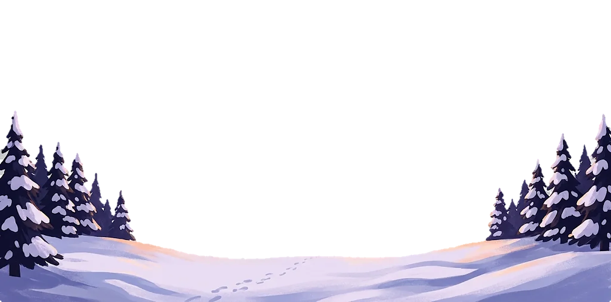
UXDC Designathon 2.0Human Connection
Leave a light on.
A campus app for the in-between hours
a quiet way to say I’m open to company
so nobody has to be the first to say hi.
01The moment
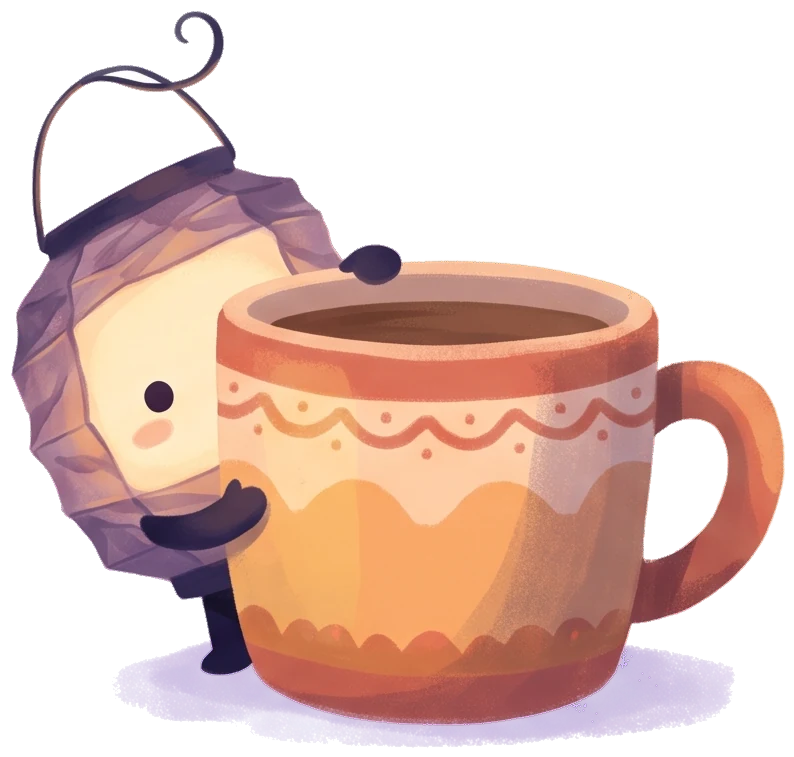
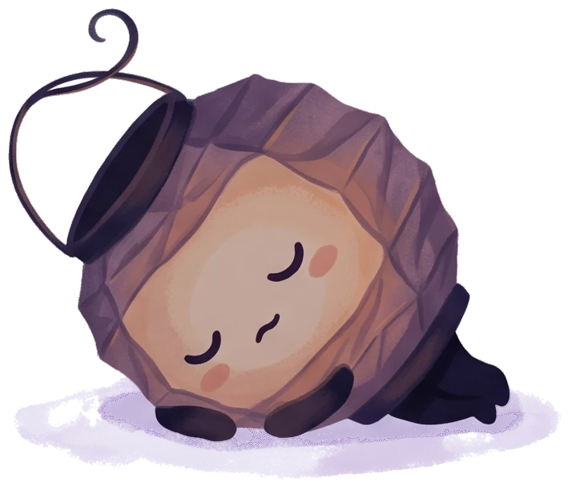
02Why it happens
Desk research across Canadian and UCalgary surveys, three behavioural-science studies, and a competitive analysis. Full write-up in docs/RESEARCH.md.
After a conversation with a stranger, people consistently underestimate how much the other person liked them.
Commuters predicted that talking to a stranger would be unpleasant. Those asked to do it reported a more positive trip than those who sat alone.
In a public space there is no socially safe way to say “I’m open to company.” Headphones say the opposite, even when we don’t mean it.
of Canadian post-secondary students felt “very lonely” at some point in the past 12 months, and 31.2% in the last two weeks. At the University of Calgary the figure was 65%.
Young Canadians are the loneliest age group: 23% are always or often lonely, more than any other age.
Students felt happier and more like they belonged on days they talked with more acquaintances, not only close friends.
UCalgary has about 3,000 residence beds, full three years running. Most students commute and spend their gaps on campus.
03The idea
Porchlight lets you switch on a light at your table: a quiet, time-limited signal that you’re open to company. Anyone nearby can see it, walk over, and break the ice with a shared Spark. When the timer ends, the light goes out. No profiles to scroll, no swiping, no pressure.
it’s real, tap around
04How it works
Three taps: where you are, what you’re up to, and for how long. “Eating lunch, two free seats.” Lights can only be placed at public campus spots.
An illustrated campus map glows with every light that’s on right now. No feeds, no follower counts. Just warm windows in the dark.
Before you walk over, one tap: how do you think this will go? Only you ever see it. This is how Porchlight shows you your own liking gap.
You both get the same conversation starter, picked for the place and the moment, so the first thirty seconds aren’t awkward.
After the chat: how did it actually go? Seeing “I guessed 2, it was 4” again and again quietly rewires the fear of going first.
Keep the ember (only if you both want to) and they join your constellation. Over a semester your campus fills up with warm places and familiar faces.
05Three kinds of disconnection
The brief asks about feeling disconnected from other people, from a place, or from yourself. Porchlight answers each with the same small gesture.
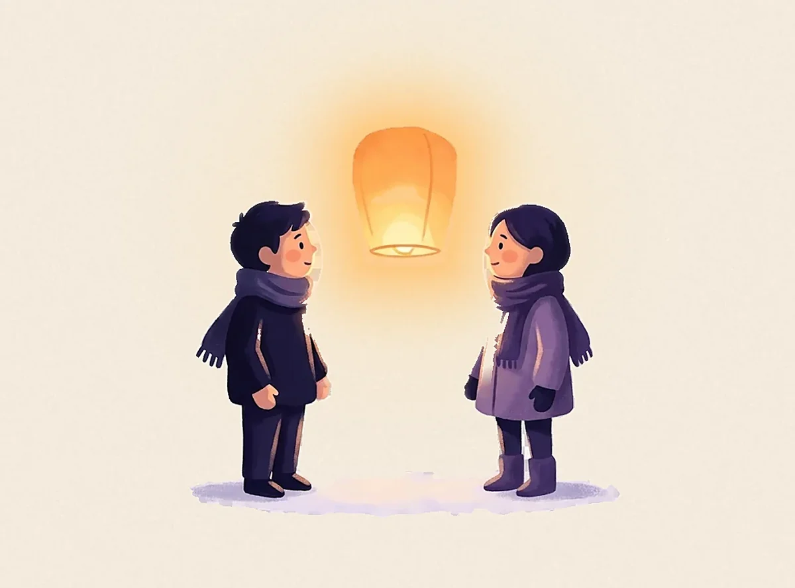
No. 1from each other
A low-stakes, opt-in signal that turns a room of strangers into a room of possible conversations.
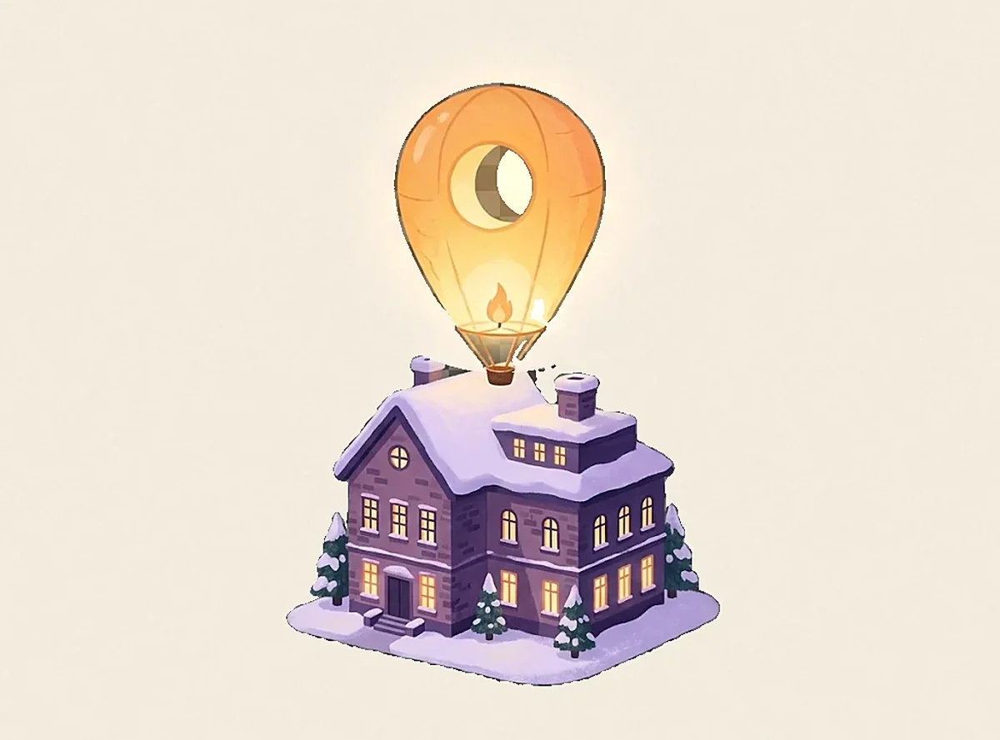
No. 2from a place
Every kindle warms the spot where it happened. Your map fills in with places that now mean something, and the campus learns where people actually gather.
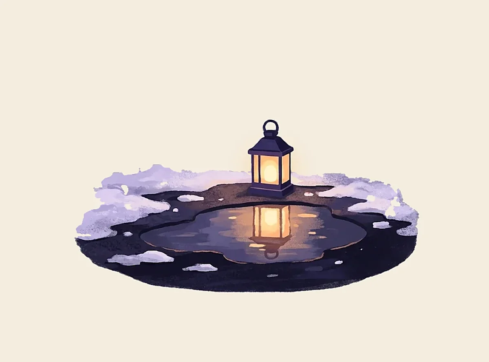
No. 3from yourself
A private record of what you feared and what really happened. You start trusting yourself again because the evidence is your own.
06Every kindle draws a line
07Designed to feel safe
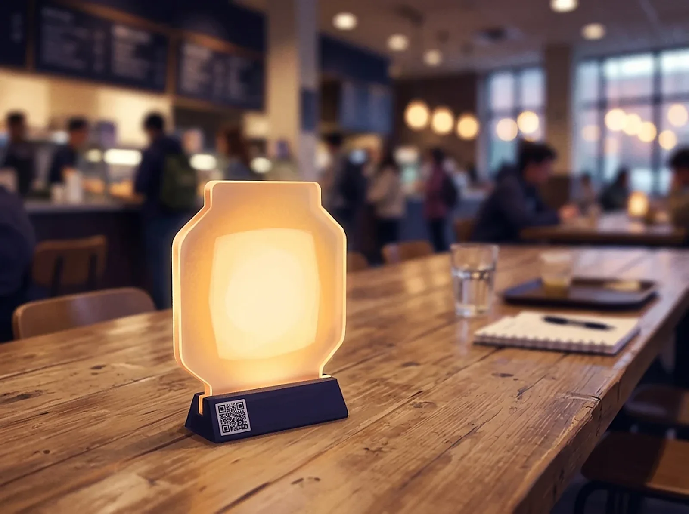
07bLantern Tables
A 12 cm frosted-acrylic lantern on a cafeteria table means “come sit with us.” Scan its base to see who’s there and for how long, or just walk over. Tokens live at Students’ Union tables in the busiest food courts.
08Feasibility & impact
Route 202 · Porchlight Line
click anywhere to release a lantern